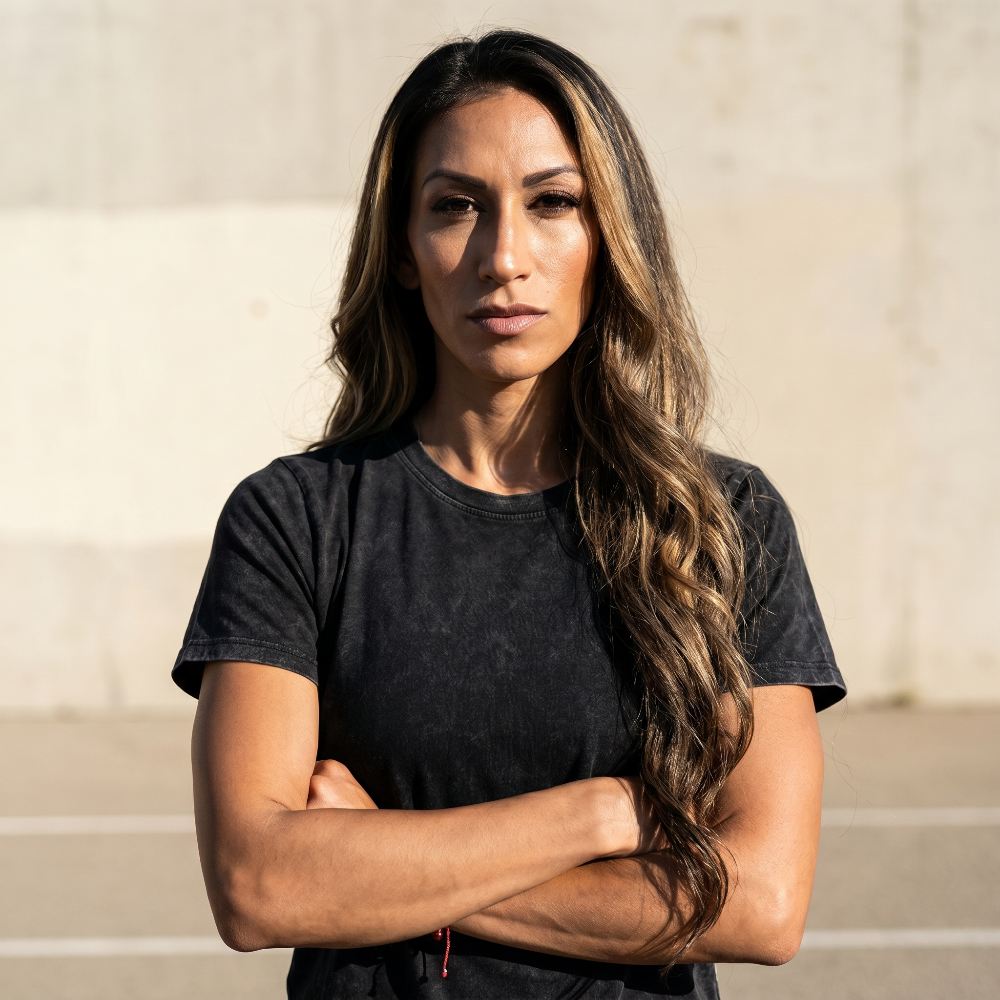

Use as the reason the standard is credible. Keep it woven mid-content as lived context, never as an opening story and never with her son's face.
Discipline-first training
Run the standard
No excuses
A focused position, LinkedIn profile copy, and five ways to grow for the mentor who lives the standard she asks other women to hold.
One position
One character
LinkedIn, ready to paste
Five growth opportunities
One portable AI pack
Your Strategy
Be the woman who already lives it
Positioning statement
KC Santana is the mentor for high-earning women who have not built discipline, and she proves the point by living the standard herself rather than selling a program.
The product right now is visible proof: wellness events, mastermind dinners, the podcast, content, and speaking. Cannabis appears inside the discipline stack as one functional tool next to training, water, and recovery, never as the offer and never as a lifestyle flag. Coaching packages, curriculum, and product SKUs stay out until they earn their place.
- Category
- Health and fitness mentor, Southern California
- Distinctive idea
- No excuses
- Founder role
- KC is the brand. There is no company standing in front of her, so content speaks as KC in first person and the daily standard is the proof
The Focus Star
The whole brand in five lines
-
Product
Thought leadership with proof.
Women are following a standard being lived in public. Events, mastermind dinners, the podcast, content, and speaking are all the same product: KC's visible discipline, made impossible to ignore.
-
People
High-earning women who need the standard
Persona: Alina, 35, Southern California. Good salary, health-conscious, open to alternative tools, and undisciplined. She can afford wellness and has not built the habit, and she is awkward around cannabis. She does not need more information. She needs a standard she cannot negotiate with.
-
Purpose
Women's health through discipline
The point is cognitive longevity, hormonal health, physical health, and mental health, reclaimed through lifestyle discipline weighted toward fitness. The purpose is not to change every woman. It is to make the better way visible enough that excuses get harder to defend.
-
Promise
No excuses.
Brand DNA: No excuses. The brand will not sell the shortcut. The body, the brain, the hormones, the training, the work, and the room all answer to the same standard.
-
Personality
Disciplined badassness
Authoritative, bold, determined, and honest, with willpower as the through-line. Corporate-trained, cannabis-literate, mother of three, and still giving full effort on the days when nobody would blame her for less. Main Brand Archetype: Hero, held at equal weight with the standard-setting side of the mix.
Point of view
Discipline is the health intervention, and the proof is a woman who already did the work today. No excuses.
01The example issues the command. Showing the session, the stack, and the schedule persuades better than any instruction about them.
02Discipline is the intervention. Cognitive longevity, hormonal health, and physical health answer to behavior long before they answer to a product.
03Cannabis is equipment. It sits in the stack next to water, magnesium, and sleep, measured and labeled, and it never becomes the personality.
Proof bank
What makes the position believable
Use when a reader expects the shortcut to be sold. The refusal is what separates the brand from the wellness feed around it.
Use in the bio and event copy. Describe the room and what happens in it. Do not publish attendance numbers unless they are real and confirmed.
Use in the About and the podcast. The range is why the discipline reads as chosen rather than convenient.
Use to hold the category edge. Keep it functional: pre-workout or post-recovery, measured, part of the routine.
Attendance figures, income figures, client outcomes, health results, and photographs of guests go public only with real numbers and, where a person is identifiable, written permission. Her son's face is never used.
Your Identity
Disciplined, commanding, and impossible to argue with
Personality
One character on every channel
Disciplined badassness in a Southern California voice.
This is the character every post, photo, caption, and room keeps. A woman who has been putting her own health last should finish reading and feel that the standard is reachable and that her reasons for skipping it just got weaker.
Sets the standard of the evening by holding it herself. Direct with women who are stalling, and never willing to shame anyone's body to make the point land.
Plain language about what actually got done: the session, the load, the recovery, the stack. The command arrives last and stays short, because the proof already made the argument.
Hard daylight, real sweat, sharp crops, and equipment-grade labeling. Photographed as an athlete at work rather than a host at a shoot, with strength carrying the femininity.
Brand archetype
The proof and the standard, held by one person
The mix follows from how the brand behaves. Hero and Ruler carry equal weight because the work is both the visible effort and the standard that effort is measured against. Magician holds the transformation women come for, and Outlaw stays a small edge that keeps functional cannabis in the picture without turning the brand into a lifestyle.
- Hero and Ruler share the lead. The effort is visible and the standard is fixed, and the brand needs both at full strength or it turns into either a workout diary or a rulebook nobody follows.
- Magician carries the transformation. Women arrive wanting to be different. The answer is a behavior they can start this week, never a promise about how fast it will work.
- Outlaw stays a trace. It holds the functional cannabis frame and the refusal of the shortcut economy, and it never becomes the personality.
- Warmth is not the job here. Care shows up as honesty about what the work costs, which is why the softer archetypes stay out of the mix.
Caregiver, Friend, Sage, Creator, Innocent, Lover, and Explorer stay at zero. Nurturing, peer chat, curriculum, and wanderlust all pull toward the wellness category this brand was built to leave.
Voice principles
Sound like the woman who already did the session
01
Lead with the receipt
Open inside the work that actually happened: the hour, the session, the load, the recovery. Specifics carry the authority, so motivational framing is unnecessary.
Saturday long run done before the house woke up. Free therapy for a special needs mom.
02
One command, and it goes last
The example makes the argument. The instruction arrives at the end in a few words and never stacks with a second ask.
Show up. No exceptions.
03
Refuse the shortcut by name
Name what the brand will not sell, and aim the refusal at the product rather than at any woman who tried it.
Cannabis belongs in the discipline stack, not on a basement couch.
04
Keep the strength feminine
Presence, form, and capability carry the femininity. Nothing here needs softening, and nothing needs a cute edge to be readable.
The routine is not cute. That is why it works.
How it looks
Trail black structure, sun bone daylight, green kept functional
Sun bone is the daylight field and the default reading surface. Trail black carries headlines, navigation, and every hard edge. Performance green marks the functional stack and the links. Heat clay appears only at moments of real effort.
Hard daylight, true color, sharp focus, honest sweat. Training, recovery, the stack on a table, and the room at a dinner. Crops are tight and land on the grid, with no soft vignettes and no dreamy filters.
A geometric sans carries commands and headlines at one display size per screen. A humanist sans carries body copy and navigation. Type behaves like equipment labeling, set in caps for the short commands. No script faces and no decorative shapes.
Leave out pastel wellness gradients, pink and glitter, scales and before-and-after panels, pill bottles and white coats, smoke clouds, and leaves used as a mark. Corners stay square everywhere.
Design decisions
Why it looks this way
Every choice below answers something the work already demands. The register it adds up to is rational, transparent, and energetic.
01
The opening field
People
What is true
Alina decides in seconds, between meetings, whether a standard is real enough to follow.
What the design does
Trail black holds the first screen. It carries a single command, and nothing else on the screen competes for that decision.
02
Headline type
Product
What is true
The work is a standard being lived, issued as a command.
What the design does
Barlow Condensed carries headlines at one display size per screen. The page never runs two headlines arguing for the same attention.
03
Reading type
Product
What is true
The receipt has to survive being read on a phone between two meetings.
What the design does
Barlow carries body copy and navigation. It holds its shape at small sizes and stays readable in long stretches.
04
The accent
Promise
What is true
The functional stack is the category edge, and it has to read as equipment.
What the design does
Performance green takes the small details of the page: thin rules, numerals, an occasional emphasized word. It stays scarce enough to register every time it appears.
05
The reading field
Personality
What is true
The brand lives in hard daylight, and a screen of pure white has none of that heat.
What the design does
Sun bone carries body copy, so a full page of thinking stays in outdoor light.
06
Conviction
Personality
What is true
Some points are not negotiable: the training happened, or it did not.
What the design does
Heat clay marks a single point of effort. It never runs as body text and never labels a control.
07
Photography
People
What is true
Alina is buying a standard from a woman she can see living it.
What the design does
KC's own portrait on the homepage and the LinkedIn card. Photographed as the person who already holds the standard.

08
Space and density
Promise
What is true
A crowded page looks unsure which of its own claims to stand behind.
What the design does
Generous margins, hairline rules, and one thing to do per screen. No badge walls and no six claims stacked on the first view.
What it is never mistaken for
- Stoner aesthetic
- Pink Barbie / bubblegum girly
- Spa wellness calm
- Pharma-glossy wellness
- GLP-1 / weight-loss shortcut imagery
- Therapy-soft femininity
- Beach influencer softness
- Infantilized maternity / mommy-blogger pink
Your profiles
Put the same standard on LinkedIn

KC Santana
Discipline-first women's health | Events, mastermind dinners, and speaking | Southern California
Southern California{kind=link}
Headline
Discipline-first women's health | Events, mastermind dinners, and speaking | Southern California
Discipline-first women's health | Events, mastermind dinners, and speaking | Southern CaliforniaAbout
Ready to paste
I work with high-earning women who can afford every wellness product on the market and still have not built the habit that would change anything.
My work is thought leadership with proof. I run wellness events and mastermind dinners in Southern California, I host a podcast about discipline-first women's health, and I publish the daily standard so it is visible rather than described. I am a mentor and a thought leader, not a coach and not an educator.
The subject is cognitive longevity, hormonal health, physical health, and mental health, and the lever is lifestyle discipline weighted toward fitness. Sun-grown cannabis sits inside that stack as one functional tool next to water, magnesium, and sleep. It is equipment in the stack.
I do not sell the shortcut. I am a special-needs mother of three, so a skipped week is not something I can afford, and that is the standard I am asking other women to hold.
If you are tired of hearing your own reasons, send me the word STANDARD and I will tell you where to start this week.
Featured
Proof in the order a woman needs it
- 01No excusesPosition
The position post. What the standard is, what it costs, and one real day shown in full, with the STANDARD close.
- 02Discipline is the interventionPurpose
The argument that behavior moves cognitive longevity and hormonal health before any product does. No medical claims, no protocol promises.
- 03What is actually in the stackCategory
The functional stack laid out as equipment, including where sun-grown cannabis fits and where it does not.
Use With AI
Take your strategy into any language model without starting again
The Markdown pack keeps your position, voice, proof, and factual boundaries together. Paste it at the start of a new conversation, then add one of the prompts below.
- Format
- Plain Markdown
- Works with
- ChatGPT, Claude, Gemini, Copilot, and other LLMs
- Includes
- Identity, instructions, context, examples, boundaries, and prompts
Loading your context pack...
Starter prompts
Choose the job and keep the strategy attached
01
Write an LinkedIn post
Using the brand context above, write one LinkedIn caption in KC Santana's voice for The daily standard territory. Audience: a high-earning woman in Southern California who has been putting her own health last. Open with the receipt from a real session, name one thing she can do this week, and close with one short command. Under 120 words, no emoji, no invented metrics, at most three hashtags at the end.
02
Rewrite the bio
Using the brand context above, draft the four-line LinkedIn bio in this order: the promise, who it is for, what is on offer, and the region. Keep each line short enough to hold on one mobile line. Stay inside the factual boundaries and do not state a handle or a URL.
03
Rewrite the About
Using the brand context above, draft the LinkedIn About in first person as KC. Five short paragraphs in this order: who she works with, what the work actually is, the subject and the lever, the refusal and the personal stake, then the STANDARD close. Stay inside the factual boundaries.
04
Plan a podcast episode
Using the brand context above, write a literal episode title and a description for one discipline-first women's health topic. The title names the behavior takeaway rather than teasing it. The description states who the episode serves and what a listener does differently afterward. No medical claims and no curiosity-gap language.
05
Write an event invitation
Using the brand context above, write the invitation to one wellness event or mastermind dinner. Name the standard of the room, what happens in it, and what a woman leaves with. Make the ask selective through behavior rather than status. Leave the date, venue, and time as placeholders for KC to fill in.
06
Specify the banner
Five growth opportunities
Five ways to grow from here
-
Give the room one name so a woman can forward it in a single message
Events and mastermind dinners are already how the authority gets built and how women meet the standard in person. Right now each one has to be explained from scratch. One fixed name and one page turn an invitation into something a guest can send to the friend who needs it more than she does.
Do this now
- Write one page with four fixed blocks: who the room is for, what happens in it, what a woman leaves with, and how to request a seat.
- Use the same name and the same request path on LinkedIn, in the podcast outro, and in the LinkedIn About.
- Add a field to the request path that records who sent her, so the referral pattern becomes visible.
Ready to use
- Room name
- The Standard Table
- Room line
- An evening at one table, with women who are done negotiating with themselves about their own health.
- Bring
- The excuse you are most tired of hearing yourself say, and one thing you are willing to do about it this month.
Watch forThree rooms filled through the named request path, with at least half the seats naming who referred them.
-
Turn podcast episodes into the speaking reel that books rooms
Speaking is named as the natural extension of the mentor and thought-leader position, and the podcast is already producing the raw material for it. Episodes make the argument in long form. A short reel and a one-page topic sheet turn that back catalog into something an event organizer can actually book from.
Do this now
- Pick the three episodes that make the discipline-as-intervention argument most cleanly and cut sixty to ninety seconds from each.
- Write a one-page speaking sheet with three talk titles, the audience each one serves, and the behavior each room leaves with.
- Send it to the organizers of the wellness and business events already attended, before pitching anyone new.
Ready to use
- Talk title
- Discipline is the intervention
- Talk promise
- The room leaves with one standard they can hold this week, and no permission to wait for a better one.
- Outreach line
- I speak on discipline as the health intervention for high-earning women. Here are three talks and what each room walks out with.
Watch forTwo speaking slots confirmed from organizers already in the network, and the sheet requested by a third.
-
Move the weekly standard onto an email list you own
The proof is being published on platforms that decide who sees it. A short weekly email carrying one standard and that week's receipts converts followers into a list that events, the podcast, and any future product can all draw on. It also gives the LinkedIn bio link a job that is worth clicking.
Do this now
- Send one email a week with a fixed shape: one standard, this week's receipts, and one thing to do before the next send.
- Point the LinkedIn link and the podcast outro at the signup, and use the same four-word call to action in both places.
- Offer one honest reason to subscribe that is not a lead magnet, such as first access to seats at the next room.
Ready to use
- List name
- The Weekly Standard
- Signup line
- One standard a week, the receipts behind it, and first call on seats at the table.
- Subject line pattern
- Under six words, literal, naming the standard rather than teasing it.
Watch forTwelve weekly sends without a gap, and the first room that fills from the list before it is announced publicly.
-
Ask the women who came back for the one woman who has not come yet
The audience is a small number of high-earning women in one region, which means the second room is easier to fill from the first than from a cold feed. Women who came twice have already made the decision the brand needs a stranger to make, and nobody has asked them to bring anyone.
Do this now
- List every woman who has attended more than one event or dinner and note who she came with.
- Send each one a short personal message inviting her to bring exactly one guest to the next room, named rather than open.
- Keep a simple record of who brought whom, so the pattern is visible before the next invitation goes out.
Ready to use
- Message to a returning guest
- You have been in this room twice now. Bring one woman with you next time, the one you keep thinking about while we talk. I will hold a seat for her.
- Who to bring line
- Someone who can afford to take care of herself and has not started.
Watch forHalf the seats at the next room come from a returning guest bringing one person, and two of those guests come back on their own.
-
Run one recurring series that publishes the receipt instead of the advice
The position rests on visible proof, and proof that appears at random reads as a habit nobody can count on. A fixed recurring slot built on the actual training log gives Alina a reason to keep watching, gives the podcast and the rooms something to point at, and removes the weekly question of what to post.
Do this now
- Publish one post at the same time each week under a fixed series name, rotating the three content territories in order.
- Photograph real sessions as they happen so the series never needs stock imagery or a staged shoot.
- Close every post with one command and the reply keyword, and nothing else.
Ready to use
- Series name
- The Log
- First post opening
- Here is what got done this week, including the day I had a good reason to skip.
- Close
- Send me the word STANDARD and I will tell you where to start.
Watch forTwelve posts published without a gap, and five conversations that open with a woman naming her own excuse first.